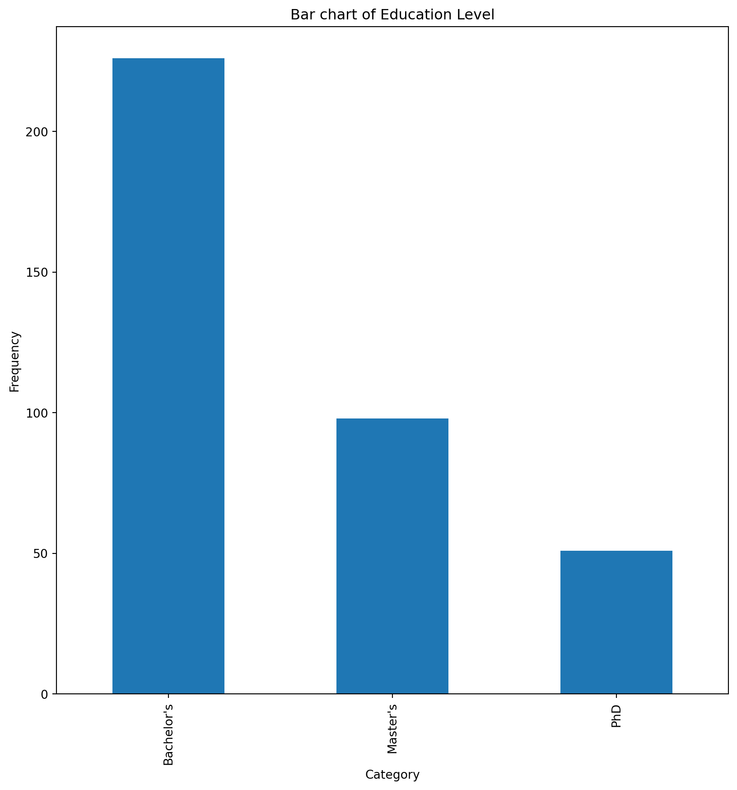

import numpy as np
import pandas as pd
import seaborn as sns
from matplotlib import pyplot as pltCan Salary be accurately predicted using metrics such as age and years of experience, gender and education level?
Importing data
dataset = pd.read_csv("salary_data.csv")
df=dataset.copy()
df| Age | Gender | Education Level | Job Title | Years of Experience | Salary | |
|---|---|---|---|---|---|---|
| 0 | 32.0 | Male | Bachelor's | Software Engineer | 5.0 | 90000.0 |
| 1 | 28.0 | Female | Master's | Data Analyst | 3.0 | 65000.0 |
| 2 | 45.0 | Male | PhD | Senior Manager | 15.0 | 150000.0 |
| 3 | 36.0 | Female | Bachelor's | Sales Associate | 7.0 | 60000.0 |
| 4 | 52.0 | Male | Master's | Director | 20.0 | 200000.0 |
| ... | ... | ... | ... | ... | ... | ... |
| 370 | 35.0 | Female | Bachelor's | Senior Marketing Analyst | 8.0 | 85000.0 |
| 371 | 43.0 | Male | Master's | Director of Operations | 19.0 | 170000.0 |
| 372 | 29.0 | Female | Bachelor's | Junior Project Manager | 2.0 | 40000.0 |
| 373 | 34.0 | Male | Bachelor's | Senior Operations Coordinator | 7.0 | 90000.0 |
| 374 | 44.0 | Female | PhD | Senior Business Analyst | 15.0 | 150000.0 |
375 rows × 6 columns
label="Salary"
df.describe()| Age | Years of Experience | Salary | |
|---|---|---|---|
| count | 373.000000 | 373.000000 | 373.000000 |
| mean | 37.431635 | 10.030831 | 100577.345845 |
| std | 7.069073 | 6.557007 | 48240.013482 |
| min | 23.000000 | 0.000000 | 350.000000 |
| 25% | 31.000000 | 4.000000 | 55000.000000 |
| 50% | 36.000000 | 9.000000 | 95000.000000 |
| 75% | 44.000000 | 15.000000 | 140000.000000 |
| max | 53.000000 | 25.000000 | 250000.000000 |
for col in df.select_dtypes("float"or"int"):
print(col)
print(f'\taverage with NaN: {df[col].mean()}')
print(f'\taverage without NaN: {df[col].mean(skipna=True)}')Age
average with NaN: 37.43163538873995
average without NaN: 37.43163538873995
Years of Experience
average with NaN: 10.03083109919571
average without NaN: 10.03083109919571
Salary
average with NaN: 100577.34584450402
average without NaN: 100577.34584450402for col in df.select_dtypes("object"):
print(col)
print(f'\tmost common value with NaN: {df[col].mode()[0]} and without NaN: {df[col].value_counts().idxmax()}')Gender
most common value with NaN: Male and without NaN: Male
Education Level
most common value with NaN: Bachelor's and without NaN: Bachelor's
Job Title
most common value with NaN: Director of Marketing and without NaN: Director of MarketingData Preprocessing
Replacing quantitive feature NaN with average, categorical NaN with most common value
Printing the whether the number of rows with NaN is 0 to make sure values were imputed properly
for col in df.columns :
if col in df.select_dtypes(include=['object']).columns:
df[col]=df[col].fillna(df[col].dropna().mode()[0])
print(col,df[col].isna().sum() == 0)
else :
df[col]=df[col].fillna(df[col].mean(skipna=True))
print(col,df[col].isna().sum() == 0)Age True
Gender True
Education Level True
Job Title True
Years of Experience True
Salary TrueCalculating value counts of each column
for col in df.select_dtypes('object'):
print(col,'-------->')
print(df[col].value_counts().reset_index())
print()
print()Gender -------->
Gender count
0 Male 196
1 Female 179
Education Level -------->
Education Level count
0 Bachelor's 226
1 Master's 98
2 PhD 51
Job Title -------->
Job Title count
0 Director of Marketing 14
1 Director of Operations 11
2 Senior Business Analyst 10
3 Senior Marketing Analyst 9
4 Senior Marketing Manager 9
.. ... ...
169 Business Development Manager 1
170 Customer Service Representative 1
171 IT Manager 1
172 Digital Marketing Manager 1
173 Junior Web Developer 1
[174 rows x 2 columns]
Converting value counts to frequencies
for col in df.select_dtypes(include=['object']).columns:
tableau_effectifs = df[col].value_counts().reset_index()
tableau_effectifs.columns = [col, 'Count']
tableau_effectifs['Frequency (%)'] = (tableau_effectifs['Count'] / len(df)) * 100
print("Counts per", col)
print(tableau_effectifs)
print()Counts per Gender
Gender Count Frequency (%)
0 Male 196 52.266667
1 Female 179 47.733333
Counts per Education Level
Education Level Count Frequency (%)
0 Bachelor's 226 60.266667
1 Master's 98 26.133333
2 PhD 51 13.600000
Counts per Job Title
Job Title Count Frequency (%)
0 Director of Marketing 14 3.733333
1 Director of Operations 11 2.933333
2 Senior Business Analyst 10 2.666667
3 Senior Marketing Analyst 9 2.400000
4 Senior Marketing Manager 9 2.400000
.. ... ... ...
169 Business Development Manager 1 0.266667
170 Customer Service Representative 1 0.266667
171 IT Manager 1 0.266667
172 Digital Marketing Manager 1 0.266667
173 Junior Web Developer 1 0.266667
[174 rows x 3 columns]
df_summary=df.describe()
df_summary| Age | Years of Experience | Salary | |
|---|---|---|---|
| count | 375.000000 | 375.000000 | 375.000000 |
| mean | 37.431635 | 10.030831 | 100577.345845 |
| std | 7.050146 | 6.539452 | 48110.856588 |
| min | 23.000000 | 0.000000 | 350.000000 |
| 25% | 31.500000 | 4.000000 | 55000.000000 |
| 50% | 36.000000 | 9.000000 | 95000.000000 |
| 75% | 44.000000 | 15.000000 | 140000.000000 |
| max | 53.000000 | 25.000000 | 250000.000000 |
Plotting distribution of each quantitative feature (histogram and boxplot)
for col in df.select_dtypes(include=["float",'int']).columns:
plt.hist(df[col], bins=10)
plt.xlabel(col)
plt.ylabel("Frequency")
plt.title("Distribution of " + col)
plt.show()
plt.boxplot(df[col])
plt.ylabel(col)
plt.title("Box Plot of " + col)
plt.show()Plotting distribution of categorical features (bar chart)
for col in df.select_dtypes("object").columns:
value_counts=df[col].value_counts()
if col == "Job Title": plt.figure(figsize=(20,20))
else: plt.figure(figsize=(10,10))
value_counts.plot.bar()
plt.xlabel("Category")
plt.ylabel("Frequency")
plt.title("Bar chart of " + col)
plt.show()
Identifying potential outliers by calculating 1.5*Interquartile range
for col in df.select_dtypes('float').columns:
q1=np.percentile(df[col],25)
q3=np.percentile(df[col],75)
iqr=q3-q1
inf=q1-(1.5)*iqr
sup=q3+(1.5)*iqr
outliers = df[(df[col] < inf) | (df[col] > sup)]
print(col,"Outliers:", outliers)Age Outliers: Empty DataFrame
Columns: [Age, Gender, Education Level, Job Title, Years of Experience, Salary]
Index: []
Years of Experience Outliers: Empty DataFrame
Columns: [Age, Gender, Education Level, Job Title, Years of Experience, Salary]
Index: []
Salary Outliers: Empty DataFrame
Columns: [Age, Gender, Education Level, Job Title, Years of Experience, Salary]
Index: []Printing the mean per unique value in each feature
for num_var in df.select_dtypes("float"):
for cat_var in df.select_dtypes("object"):
mean_per_category = df.groupby(cat_var)[num_var].mean()
print(f'Mean of {num_var} per {cat_var}: {mean_per_category}\n')Mean of Age per Gender: Gender
Female 37.581006
Male 37.295221
Name: Age, dtype: float64
Mean of Age per Education Level: Education Level
Bachelor's 34.340103
Master's 40.765306
PhD 44.725490
Name: Age, dtype: float64
Mean of Age per Job Title: Job Title
Account Manager 32.0
Accountant 31.0
Administrative Assistant 37.5
Business Analyst 33.5
Business Development Manager 34.0
...
UX Designer 34.0
UX Researcher 27.0
VP of Finance 47.0
VP of Operations 47.0
Web Developer 33.0
Name: Age, Length: 174, dtype: float64
Mean of Years of Experience per Gender: Gender
Female 10.011173
Male 10.048784
Name: Years of Experience, dtype: float64
Mean of Years of Experience per Education Level: Education Level
Bachelor's 6.993636
Master's 13.397959
PhD 17.019608
Name: Years of Experience, dtype: float64
Mean of Years of Experience per Job Title: Job Title
Account Manager 5.0
Accountant 4.0
Administrative Assistant 9.0
Business Analyst 6.0
Business Development Manager 8.0
...
UX Designer 5.0
UX Researcher 2.0
VP of Finance 19.0
VP of Operations 19.0
Web Developer 6.0
Name: Years of Experience, Length: 174, dtype: float64
Mean of Salary per Gender: Gender
Female 97011.173184
Male 103834.207611
Name: Salary, dtype: float64
Mean of Salary per Education Level: Education Level
Bachelor's 74984.534034
Master's 129795.918367
PhD 157843.137255
Name: Salary, dtype: float64
Mean of Salary per Job Title: Job Title
Account Manager 75000.0
Accountant 55000.0
Administrative Assistant 50000.0
Business Analyst 77500.0
Business Development Manager 90000.0
...
UX Designer 80000.0
UX Researcher 65000.0
VP of Finance 200000.0
VP of Operations 190000.0
Web Developer 65000.0
Name: Salary, Length: 174, dtype: float64
Mapping categorical values to numerical values (Gender to 0/1, Education to numbers 1-3)
df_standarized=dfdic_gender={"Male":0,"Female":1}
df_standarized['Gender']=df_standarized['Gender'].map(dic_gender)dic_job={"Bachelor's":1,"Master's":2,"PhD":3}
df_standarized['Education Level']=df_standarized['Education Level'].map(dic_job)# standardized_correlation_matrix = df_standarized.corr()
# standardized_correlation_matrixInvestigating the correlations between each feature
# plt.figure(figsize=(10,10))
# sns.heatmap(standardized_correlation_matrix, annot=True, cmap="coolwarm")
# plt.title("Correlation Matrix")
# plt.show()Looking at trends in features across each categorical values
sns.pairplot(df_standarized,hue="Education Level");
plt.title("Feature Trends Across Education Level");
plt.show();sns.pairplot(df_standarized,hue="Gender");
plt.title("Feature Trends Across Genders");
plt.show();df_standarized_final=df_standarized.drop("Job Title",axis=1)Splitting data into labels and features
def pre_processing(df):
X=df.drop('Salary',axis=1)
Y=df['Salary']
return X,Yfrom sklearn.model_selection import train_test_split
from sklearn.linear_model import LinearRegression
from sklearn.svm import SVR
from sklearn.model_selection import cross_val_score
from sklearn.metrics import mean_squared_error
from sklearn import metricstrain_set,test_set=train_test_split(df_standarized_final,test_size=0.25, random_state=0)
train_set.shape(281, 5)X_train, y_train = pre_processing(train_set)
X_test, y_test = pre_processing(test_set)Linear Regression Model
def evalution(model):
model.fit(X_train , y_train)
Ypred=model.predict(X_test)
plt.figure(figsize=(15,15))
plt.xlim(0, 210000)
plt.ylim(0, 210000)
plt.xlabel("Actual")
plt.ylabel("Predicted")
plt.title("Predicted Salary vs. Actual Salary")
plt.scatter(y_test,Ypred,s=200)
plt.plot(np.unique(y_test), np.poly1d(np.polyfit(y_test, Ypred, 1))(np.unique(y_test)), color='red')
plt.legend()model=LinearRegression()
evalution(model)No artists with labels found to put in legend. Note that artists whose label start with an underscore are ignored when legend() is called with no argument.model.coef_, model.intercept_(array([ 2786.22513618, -8748.91442528, 13607.18601302, 2993.79564504]),
-50711.1832091954)test_x=X_test
pred=model.predict(X_test)
print("R^2:",metrics.r2_score(y_test, pred))
print("MAE:",metrics.mean_absolute_error(y_test, pred))
print("MSE:",metrics.mean_squared_error(y_test, pred))
print("RMSE:",np.sqrt(metrics.mean_squared_error(y_test, pred)))R^2: 0.9289134708887314
MAE: 9379.911146982055
MSE: 158110407.0420734
RMSE: 12574.196079355268Support Vector Regression Model
model=SVR(kernel="linear")
evalution(model)No artists with labels found to put in legend. Note that artists whose label start with an underscore are ignored when legend() is called with no argument.test_x=X_test
pred=model.predict(X_test)
print("R^2:",metrics.r2_score(y_test, pred))
print("MAE:",metrics.mean_absolute_error(y_test, pred))
print("MSE:",metrics.mean_squared_error(y_test, pred))
print("RMSE:",np.sqrt(metrics.mean_squared_error(y_test, pred)))R^2: 0.5686720296764955
MAE: 25934.699187513485
MSE: 959358148.5703752
RMSE: 30973.5072048739